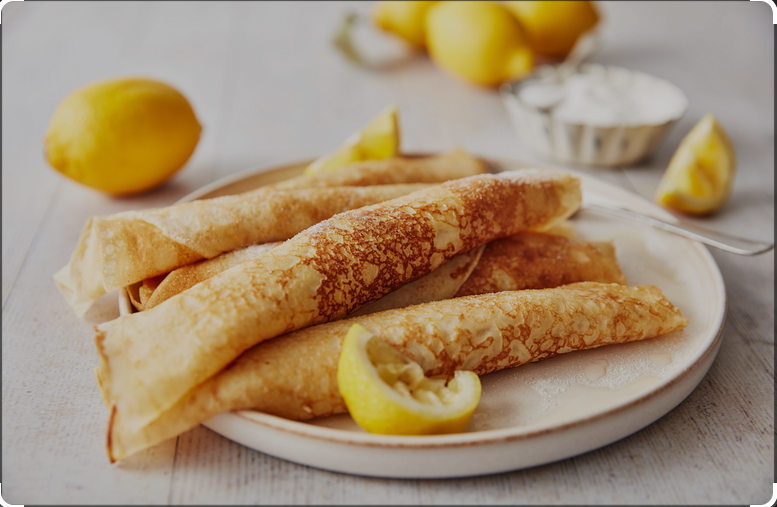

Pancake Recipe

Description
Perfect pancakes are easier to make than you think. This pancake recipe produces thick and all-around delicious pancakes with just a few ingredients. Here's a delicious pancake recipe straight from my mother's kitchen.
Ingredients
- 100g plain flour
- 2 large free range eggs
- 300ml milk
- Pinch salt
- Vegetable oil for frying
Steps
- Place the flour and salt into a bowl and make a well (hole) in the centre.
- Crack the eggs into a jug with the milk and beat, then pour this slowly into the flour well.
- Draw the flour gradually into the middle whisking all the time until you have a smooth, pourable batter the consistency of single cream.
- Cover and refrigerate for 30 minutes (if you have time), this allows the starch in the flour to swell and produces an even textured pancake.
- Using kitchen paper, coat the inside of a heavy-based shallow frying pan with a small amount of the vegetable oil.
- Pour a small ladleful of the pancake mixture (about three tablespoons) into the pan, swirling the mixture around to form a thin layer that coats the base.
- Cook for about 30 seconds until the pancake begins to set and is golden. Carefully, using a spatula or palette knife, flip the pancake over to cook the other side for a further 30 seconds until golden and crispy on the edges.
- Slide the pancake onto a plate and repeat with the remaining mixture, layering up the pancakes between baking paper.
- Pile high with your chosen sweet or savoury toppings and enjoy.